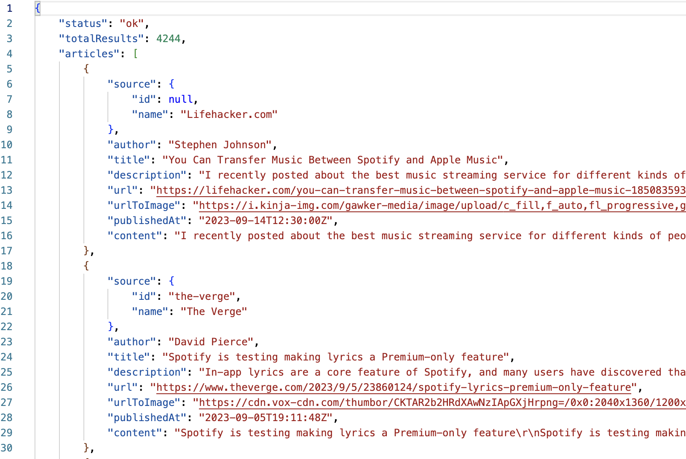
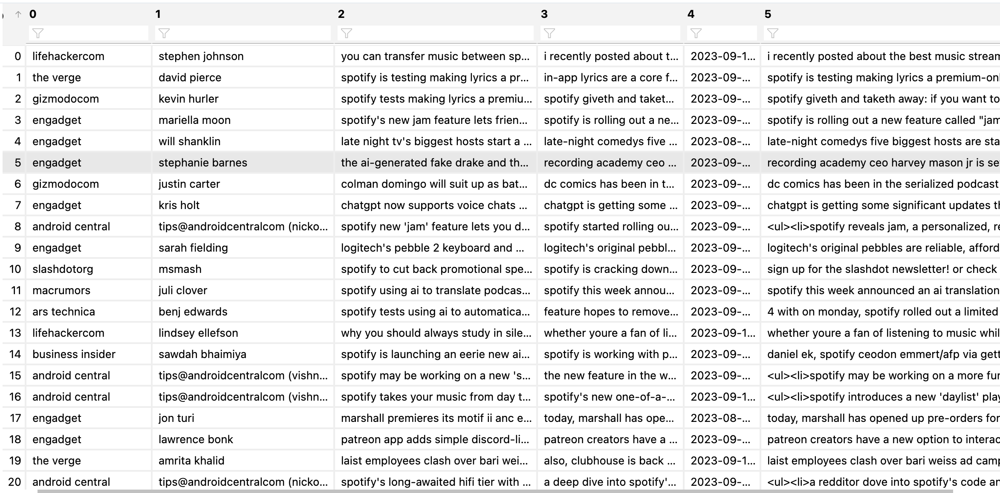
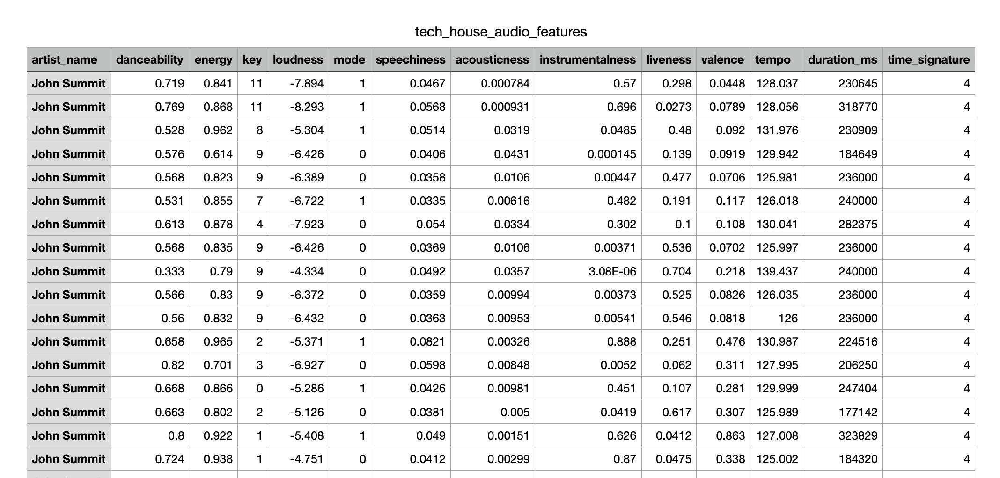
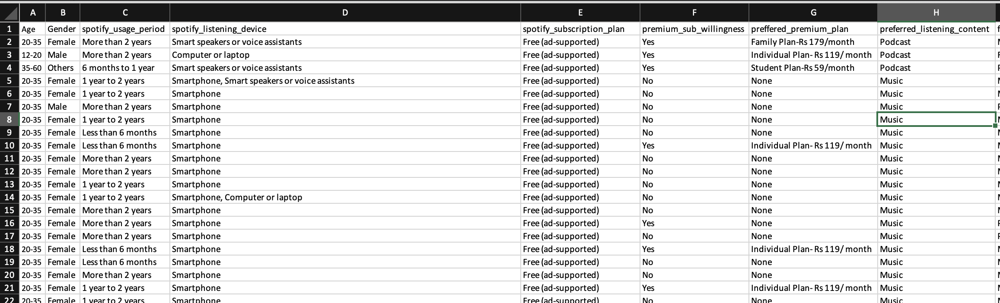

In the world of data science, ‘Data Cleaning’ is the unsung hero of the data journey. It’s the process where the raw data, often messy and imperfect, transforms into a reliable and trustworthy foundation for analysis. Data cleaning involves identifying and rectifying inconsistencies, errors, and missing values within datasets. Without this critical step, the insights drawn from data can be inaccurate, leading to misguided decisions. I understand the significance of data cleaning in ensuring the integrity and reliability of datasets, and I apply meticulous attention to detail to uncover hidden patterns and meaningful insights buried within the data. I will walk through the pre-processing steps I took for the data mentioned in the Data Gathering tab.
News API
Raw Data
I requested data from the News API using Python to request English articles that relate to Spotify. The response data was collected to a JSON file for further analysis and processing. Below is a screenshot of what the raw data looks like. You can see it contains each article along with its attributes such as author, title, description, etc. For access to the raw data, click here.

Cleaning the Data
I defined a function, ‘string_cleaner’ that takes an input string, applies a series of cleaning operations to remove unwanted characters, punctuation, and extra spaces, and then converts the text to lowercase. This function is useful for preparing text data for analysis or natural language processing tasks by ensuring that the text is standardized and cleaned of noise. Below is a screenshot of what the Spotify article text looks like after cleaning. For access to the clean data file, click here.

Electronic Dance Music Subgenres
Raw Data
Each genre has a separate table containing 10 of the most popular DJs for that genre, along with those artists’ audio features. These features include danceability, energy, key, loudness, etc. I used the Spotify API in R in order to create this dataset. For access to the raw data files, click here.

Cleaning the Data
I performed the same cleaning steps across all 5 subgenre datasets. I first took note of the shape of each dataset, which can be seen below.
Luckily, for all of the datasets, the datatypes were proper and the column names were sufficient. There were no missing values in trance, techno, tech_house, or dnb datasets. However, in the dubstep dataframe, there were a handful of missing values which I needed to further investigate. After looking at the total null values for each column, I then filtered the dataframe to show only rows with null values, this way I coud get a sense of what was missing.
# Let's look at the missing values in the dataaetnull_data = dubstep[dubstep.isnull().any(axis=1)]null_data# It appears all missing values are only for the artist Excision.
artist_name
danceability
energy
key
loudness
mode
speechiness
acousticness
instrumentalness
liveness
valence
tempo
duration_ms
time_signature
10
Excision
NaN
NaN
NaN
NaN
NaN
NaN
NaN
NaN
NaN
NaN
NaN
NaN
NaN
16
Excision
NaN
NaN
NaN
NaN
NaN
NaN
NaN
NaN
NaN
NaN
NaN
NaN
NaN
36
Excision
NaN
NaN
NaN
NaN
NaN
NaN
NaN
NaN
NaN
NaN
NaN
NaN
NaN
46
Excision
NaN
NaN
NaN
NaN
NaN
NaN
NaN
NaN
NaN
NaN
NaN
NaN
NaN
I noticed that there were 4 rows in total that have complete null values for all columns (besides artist name). All 4 rows are for the artist Excision, so I further wanted to look at how many records there are for Excision as a whole, before I decided what to do with the missing values. I filtered the dataset to show only records for the artist Excision.
# Let's look at all rows for Excisiondubstep.loc[dubstep['artist_name'] =='Excision']# We have 116 rows for Excision, and 4 of those rows have all missing values. If we drop these 4 rows that would be 3.45% of Excision data, but only # .32% of the entire dataset. In this case, we can drop the rows as it does not pose the threat of losing a lot of data.
artist_name
danceability
energy
key
loudness
mode
speechiness
acousticness
instrumentalness
liveness
valence
tempo
duration_ms
time_signature
0
Excision
0.379
0.875
7.0
-2.201
0.0
0.0648
0.006250
0.00000
0.182
0.171
149.960
196233.0
4.0
1
Excision
0.576
0.981
10.0
0.381
0.0
0.6060
0.007790
0.06590
0.197
0.139
149.723
243200.0
4.0
2
Excision
0.295
0.967
2.0
-2.940
1.0
0.1740
0.000213
0.82100
0.705
0.148
149.776
203224.0
4.0
3
Excision
0.368
0.976
8.0
-0.904
1.0
0.1750
0.004530
0.24100
0.141
0.174
74.415
189342.0
4.0
4
Excision
0.319
0.983
1.0
-0.480
1.0
0.3800
0.007900
0.00144
0.100
0.280
75.373
228800.0
4.0
...
...
...
...
...
...
...
...
...
...
...
...
...
...
...
112
Excision
0.875
0.438
11.0
-7.420
1.0
0.0769
0.000553
0.40900
0.102
0.545
139.959
308529.0
4.0
113
Excision
0.781
0.958
11.0
-9.255
0.0
0.0996
0.003450
0.81200
0.219
0.364
144.003
279200.0
4.0
114
Excision
0.763
0.987
0.0
-10.080
1.0
0.0607
0.001350
0.93900
0.187
0.714
139.997
344666.0
4.0
115
Excision
0.577
0.770
2.0
-7.818
1.0
0.0760
0.063000
0.90800
0.364
0.435
139.866
287997.0
4.0
116
Excision
0.534
0.840
7.0
-9.990
1.0
0.3440
0.004740
0.68900
0.182
0.293
134.455
399488.0
4.0
117 rows × 14 columns
Based off of the output, there were 116 records for Excision, so if I decided to drop these 4 rows that would mean losing 3.45% of Excision data, or .32% of the total dataset. Based off of these numbers, I decided it was safe to drop these rows. The final shape of the dataset is shown below (1245 rows & 14 columns to begin, 1241 rows & 14 columns to end).
dubstep = dubstep.dropna()dubstep.shape
(3786, 14)
I then combined all the genre datasets into one large dataset.
This dataset was taken from Kaggle and contains data pertaining to each quarter of the year with total revenue, cost of revenue, premium revenue and more. Below is a screenshot of what the raw data looks like. Click here for the raw data file.
Cleaning the Data
After loading the csv file into Python, I checked the shape of the initial raw data, which was 26 rows and 17 columns. I then began by taking a look at the top (head) and bottom (tail) of the data. When looking at the bottom, I noticed that the last row had all missing (NaN) values except for one column. I kept this in mind for later when dealing with missing values.
import pandas as pddf = pd.read_csv('../../data/raw_data/revenue_expenses_premium_users/spotify_quarterly.csv')df.shape
(26, 17)
df.tail()
Date
Total Revenue
Cost of Revenue
Gross Profit
Premium Revenue
Premium Cost Revenue
Premium Gross Profit
Ad Revenue
Ad Cost of revenue
Ad gross Profit
MAUs
Premium MAUs
Ad MAUs
Premium ARPU
Sales and Marketing Cost
Research and Development Cost
Genreal and Adminstraive Cost
21
31-12-2017
1449.0
867.0
582.0
1018.0
761.0
257.0
130.0
106.0
24.0
160.0
71.0
93.0
5.24
173.0
123.0
73.0
22
30-09-2017
1032.0
802.0
230.0
923.0
711.0
212.0
109.0
91.0
18.0
150.0
62.0
91.0
5.06
138.0
98.0
67.0
23
30-06-2017
1007.0
775.0
232.0
904.0
686.0
218.0
103.0
89.0
14.0
138.0
59.0
83.0
5.53
146.0
95.0
70.0
24
31-03-2017
902.0
797.0
105.0
828.0
710.0
118.0
74.0
87.0
-13.0
131.0
52.0
82.0
5.46
110.0
80.0
54.0
25
31-12-2016
NaN
NaN
NaN
NaN
NaN
NaN
NaN
NaN
NaN
NaN
NaN
NaN
6.00
NaN
NaN
NaN
Next, I wanted to clean up the column names, so I removed any spaces and replaced them with underscores as well as made all column names lowercase.
# Let's change the column names to have no spaces and all lowercasedef add_underscores(df): df.columns = df.columns.str.replace(' ', '_')return dfdf = add_underscores(df)df.columns = df.columns.str.lower()df.columns
Then, I renamed any column names that had spelling mistakes.
# Now, lets fix any spelling mistakes in the column namesdf = df.rename(columns={'genreal_and_adminstraive_cost': 'general_and_administrative_cost'}) df.columns
I summed up all of the missing values in the dataset. I kept in mind from earlier that the bottom row of the dataset was missing all values except for one column. Looking at the sum of null values, I knew that this was the only row missing any values and therefore it could be removed from the dataframe.
I saved the cleaned data to a csv, which you can find here.
Spotify User Behavior
Raw Data
This dataset encompasses a wide range of user information, including demographics like age and gender, as well as details related to Spotify usage, such as preferred listening devices and subscription plans. It also delves into user preferences, including favorite music genres and podcast habits, offering valuable insights into Spotify’s user base and their behaviors. Below is a screenshot of the raw data. For access to the file, click here.

Cleaning the Data
After loading the csv file into Python, I checked the shape of the initial raw data, which was 520 rows and 20 columns.
import pandas as pddf = pd.read_csv('../../data/raw_data/spotify_user_behavior/spotify_user_behavior.csv', keep_default_na=False)df.shape
(520, 20)
I then looked at the columns and made them all lowercase and fixed any spelling errors.
I finally checked the data types of the columns to make sure they were all the correct type, as well as checked for any missing values in the dataset. Luckily, no data types needed to be changed and there were no missing values.